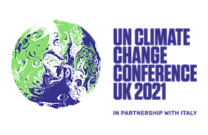

COP26, Glasgow 2021
Dades de l'esdeveniment
- Nom
- Conferència de les Parts de la Convenció Marc de les Nacions Unides sobre el Canvi Climàtic (CMNUCC) i la Conferència de les Parts en qualitat de reunió de les Parts en el Protocol de Kyoto (CMP)
- Dates de realització
- 31 d'octubre a 12 de novembre de 2021
- Tema de l'esdeveniment
- Escalfament global
- Localització
- Glasgow, Escòcia
- Participants
- 40.000
- Lloc web de la Conferència
- https://ukcop26.org/
Resultats de la Conferència
El Pacte Climàtic de Glasgow és l'acord final de la Conferència de les Nacions Unides sobre el Canvi Climàtic de 2021. Després de centenars d'hores de negociació s'ha arribat als pactes següents:
- Revisió dels plans de reducció d'emissions el 2022 per intentar mantenir l'objectiu de l'Acord de París d'assolir que l’escalfament global estigui per sota d'1,5°C.
- Reducció del 45% de les emissions de gasos d'efecte hivernacle per al 2030.
- Reducció progressiva de l'ús del carbó.
- Abans del 2025 els països desenvolupats es comprometen a doblar el finançament per a l'adaptació a la crisi climàtica dels països en desenvolupament.
L'acord pretenia incloure l'eliminació gradual de l'ús del carbó; però en els moments finals de la negociació, els països dependents del carbó, especialment l'Índia, van pressionar perquè a l'acord final es parlés, no d'eliminació sinó de reducció gradual.
L'acord no ha satisfet completament a tothom. Els governs de la Unió Europea, Estats Units i Regne Unit valoren positivament els resultats de la conferència. Els grups ecologistes han criticat els acords que consideren insuficients.
And it is my firm belief that the text that is on the table now reflects perfectly well this respect shown by the Presidency, and at the same time, allows us to act with the urgency that is essential for our survival.
Frans Timmermans
The COP26 is over. Here's a brief summary: Blah, blah, blah. But the real work continues outside these halls. And we will never give up, ever.
Greta Thunberg